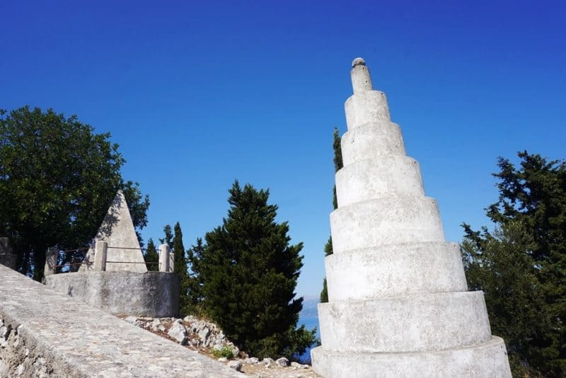

terenceithaque

Exogi (out of the land) is an Ithacan village. It is located 22 km from Vathy, on the top of the Neion mountain, at 340 meters of altidude.
This picturesc village is built in amphitheatre, domining the bay and surrounding islands.
One of the Exogi's towers
Click here.
Learn more on Exogi on Greeka
Are you looking for the content of a particular beach ? Click right here to access beaches index
Not on the page you are looking for ? Go to the index.
Do you have questions about the content of the site updates? Click here to know everything about updates.